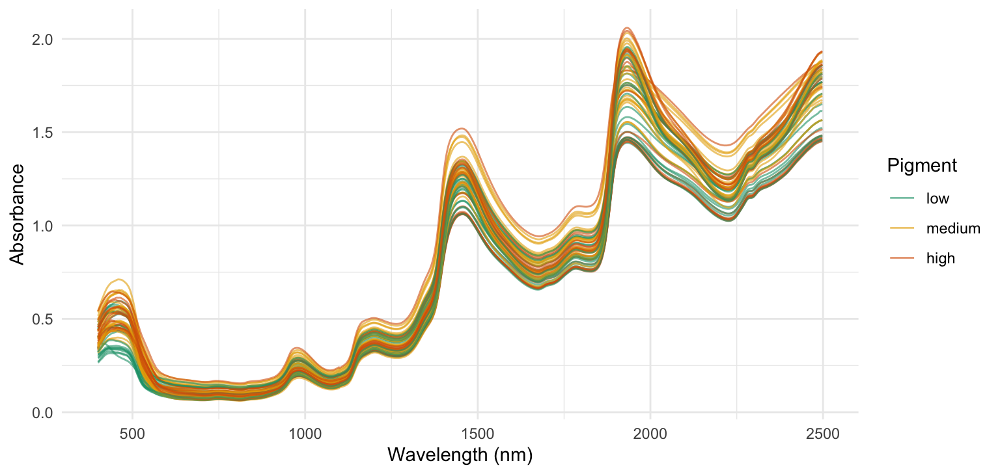
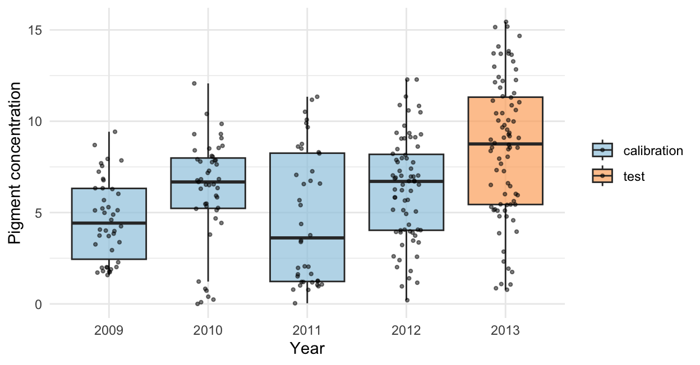
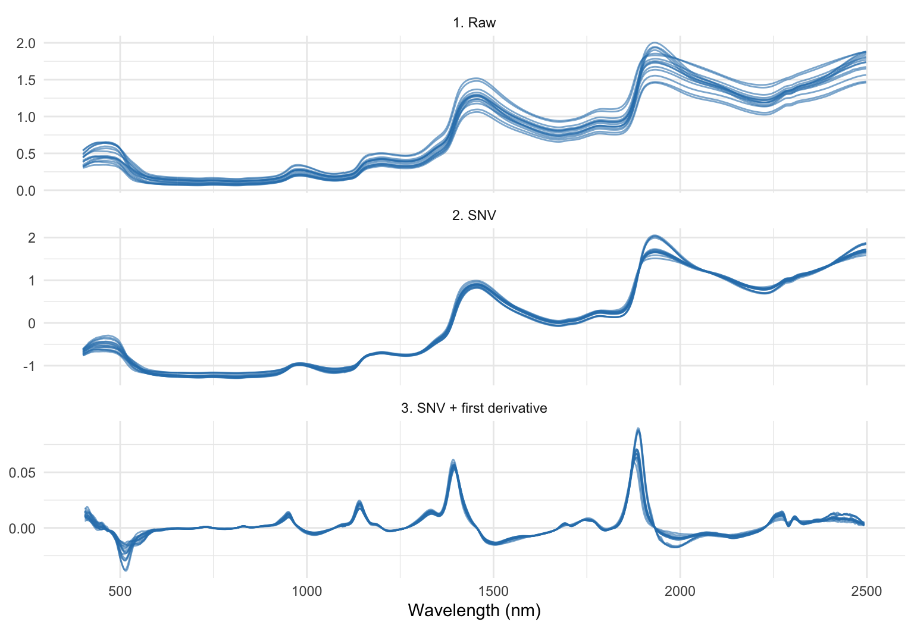
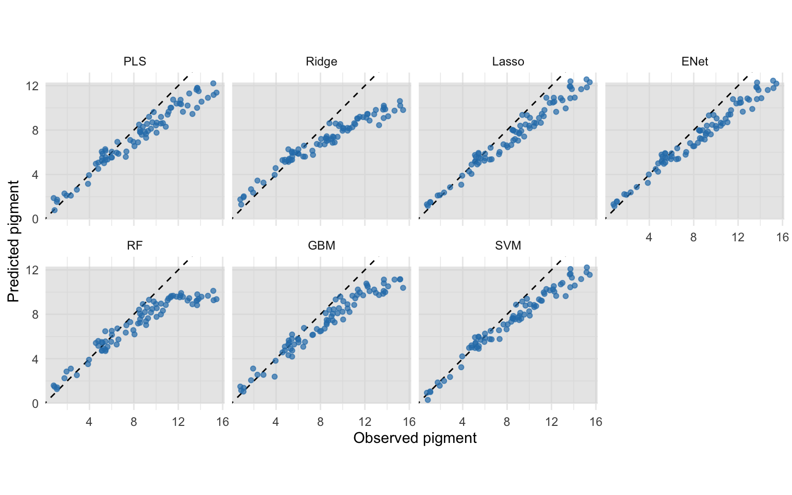
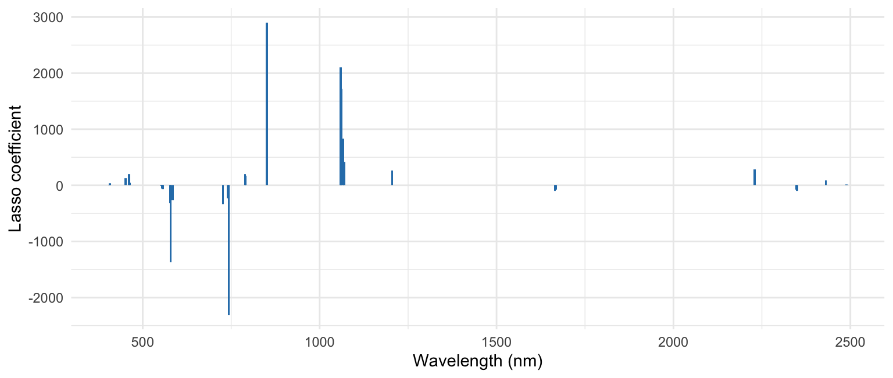
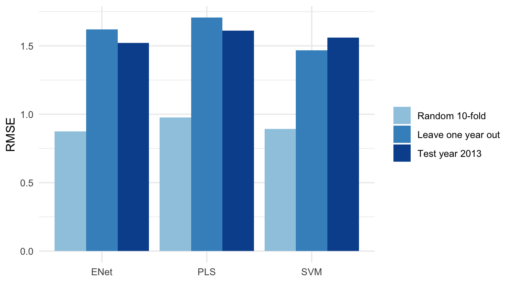
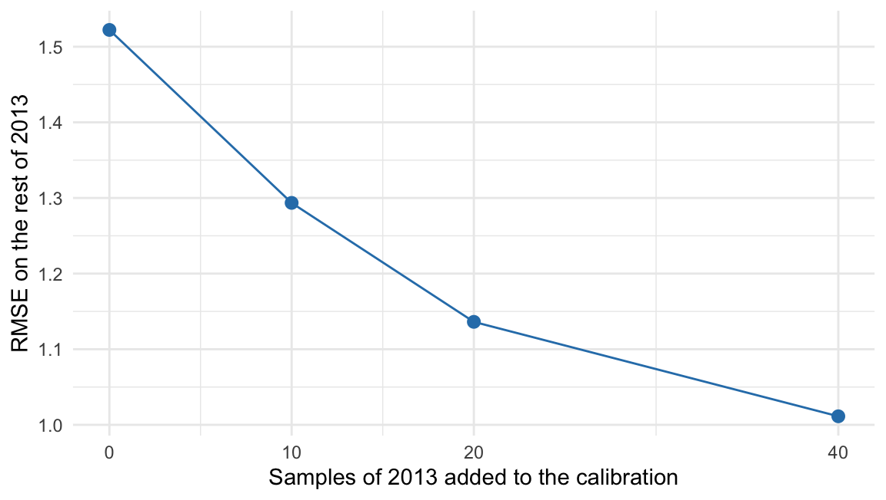

library(dplyr)
library(tidyr)
library(readr)
library(ggplot2)
library(glmnet) # ridge, lasso, elastic net
library(pls) # partial least squares
library(ranger) # random forest
library(gbm) # gradient boosting
library(e1071) # support vector machines12 Machine Learning for Prediction in Plant Breeding
Author: Luis Fernando Delgado Muñoz
Session: Day 5, Friday 13 November, 15:00 to 16:15
12.1 Learning objectives
- Decide when machine learning (ML) improves a prediction and when a classical model is enough
- Describe the main ML models used in breeding: penalized regression, PLS, random forest, gradient boosting and support vector machines
- Build a prediction model from near-infrared (NIR) spectra and compare it with a baseline
- Validate a model honestly: training, validation and test sets, cross-validation by groups and data leakage
- Recognize why a model that works in one population or season can fail in the next
- Explain the limits of ML and the role of breeder knowledge
Most of this course uses models to explain a trial: is there a difference between lines, how large is it, how sure are we? ML is used for another goal: to predict a value for a new sample, such as a plant that was only photographed or scanned. We do not need to understand every step of the model if it predicts well; but we do need to know how well it predicts in the situation where we will use it. This chapter is about that question.
NotePackages
This chapter needs glmnet, pls, gbm and e1071 in addition to ranger, which is in the course installation. If any is missing, run install.packages(c("glmnet", "pls", "gbm", "e1071")) once. The Day 6 practical uses the same packages.
12.2 Prediction against explanation
A mixed model or an ANOVA answers questions about parameters: which genotype effect, which variance component. ML models answer questions about new observations: given the spectrum, the image or the weather of a plot, what will its value be? The practical differences are:
| Classical statistics (ANOVA, mixed models) | Machine learning | |
|---|---|---|
| Main goal | Explain, estimate effects, test hypotheses | Predict new observations |
| Data | Designed experiments, few explanatory variables | Many variables, often more variables than samples |
| Model | Specified by the analyst from the design | Learned from the data, often nonlinear |
| Output | Effects with their uncertainty | A prediction and an error estimate |
| Main risk | Wrong model structure | Overfitting and a model that does not transfer |
They are not rivals. The design and the mixed model give clean phenotypes, and ML turns cheap measurements (images, spectra, sensors, markers) into predictions of expensive ones (laboratory analysis, yield, disease scores).
12.3 Where ML pays in a breeding programme
ML is useful when there are many predictors, when the relation with the trait is not a simple straight line, or when we need to measure thousands of samples quickly.
| Application | Predictors | Target |
|---|---|---|
| Chemical composition | NIR spectra | Protein, oil, starch, carotenoids |
| Disease and vigour | Image features (Chapter 10) | Severity score, biomass |
| Yield and traits | Drone and sensor indices | Yield, plant height |
| Genomic prediction | Thousands of markers | Breeding value |
| G×E prediction | Environmental covariates (Chapter 11) | Performance in a new environment |
In a mutation breeding programme, the large M2 and M3 populations have thousands of plants that cannot be measured one by one in the laboratory. A prediction from an image or a spectrum can rank every plant, so that the laboratory measures only the promising ones. The prediction does not replace the measurement: it decides where to spend it.
12.4 The data: NIR spectra of cassava breeding samples
We use a real data set from the CIAT cassava breeding programme (Davrieux et al. 2016), published with the rchemo package. It is a small part of a large calibration database built to predict carotenoids in fresh cassava roots, a trait of the biofortification programme, because the laboratory method (HPLC) can analyse only a few samples per day. Near-infrared spectra were measured between 400 and 2498 nm every 2 nm (1050 variables). For each sample, the concentration of a pigment was measured with the reference laboratory method (the data documentation names the target “pigment concentration”), and the aim is to predict it from the spectrum, which is much cheaper and faster.
nir <- read_csv("data/cassava_nir.csv", show_col_types = FALSE)
wl_cols <- grep("^w", names(nir))
wl <- as.numeric(sub("w", "", names(nir)[wl_cols]))
X <- as.matrix(nir[, wl_cols])
y <- nir$pigment
is_cal <- nir$set == "calibration"
nir |>
group_by(set, year) |>
summarise(samples = n(), mean_pigment = mean(pigment), sd = sd(pigment), .groups = "drop")# A tibble: 5 × 5
set year samples mean_pigment sd
<chr> <dbl> <int> <dbl> <dbl>
1 calibration 2009 42 4.62 2.21
2 calibration 2010 47 6.19 2.90
3 calibration 2011 40 4.70 3.65
4 calibration 2012 71 6.33 2.84
5 test 2013 80 8.50 3.82There are 200 samples from 2009 to 2012 (the calibration set, which we use to build models) and 80 samples from 2013 (the test set, which we keep untouched until the end and which plays the role of the next season). The table has 1050 predictors and 200 samples, so there are many more variables than samples; a standard multiple regression cannot be fitted.
set.seed(1)
show <- sample(which(is_cal), 60)
grp <- cut(y, quantile(y[is_cal], c(0, 1/3, 2/3, 1)), labels = c("low", "medium", "high"), include.lowest = TRUE)
long <- data.frame(sample = rep(show, each = length(wl)), wavelength = rep(wl, times = length(show)),
absorbance = as.vector(t(X[show, ])), pigment = rep(grp[show], each = length(wl)))
ggplot(long, aes(wavelength, absorbance, group = sample, colour = pigment)) +
geom_line(alpha = 0.6) +
scale_colour_manual(values = c(low = "#1b9e77", medium = "#e6ab02", high = "#d95f02")) +
labs(x = "Wavelength (nm)", y = "Absorbance", colour = "Pigment")
ggplot(nir, aes(factor(year), pigment, fill = set)) +
geom_boxplot(outlier.shape = NA, alpha = 0.7) +
geom_jitter(width = 0.15, size = 0.8, alpha = 0.5) +
scale_fill_manual(values = c(calibration = "#9ecae1", test = "#fdae6b")) +
labs(x = "Year", y = "Pigment concentration", fill = NULL)
This figure is the most important one of the chapter. The mean of the test year is 8.5, while the calibration years have a mean of 5.6, and the test year has samples above the maximum of the calibration set (15.4 against 12.3). The breeding programme has improved the trait, so the next season is not like the previous ones. In the full CIAT database the mean carotenoid content rose by more than 80% between 2009 and 2014 (Davrieux et al. 2016), and the authors link the limits of PLS to this change. We will see what it does to the predictions.
12.5 Preparing the spectra
Raw spectra differ mainly in the baseline (how much light the sample scatters) and not in chemistry. Two standard treatments are applied to each spectrum separately:
- Standard normal variate (SNV): subtract the mean of the spectrum and divide by its standard deviation. It removes differences in overall level and scale.
- First derivative (after a light smoothing): it removes the slope of the baseline and sharpens the absorption peaks.
snv <- function(X) t(apply(X, 1, function(s) (s - mean(s)) / sd(s)))
first_derivative <- function(X, k = 5) {
Xs <- t(apply(X, 1, function(s) stats::filter(s, rep(1 / k, k), sides = 2))) # moving average
Xs <- Xs[, !apply(Xs, 2, anyNA), drop = FALSE]
t(apply(Xs, 1, diff))
}
prep <- function(X) {
Z <- first_derivative(snv(X))
colnames(Z) <- paste0("v", seq_len(ncol(Z)))
Z
}
Z <- prep(X)
wl_d <- (wl[3:(length(wl) - 3)] + wl[4:(length(wl) - 2)]) / 2 # wavelength of each derivative variable
c(variables = ncol(Z), wavelengths = length(wl_d)) variables wavelengths
1045 1045 i15 <- show[1:15]
mk <- function(M, w, lab) data.frame(sample = rep(i15, each = length(w)), wavelength = rep(w, times = 15),
value = as.vector(t(M[i15, ])), step = lab)
bind_rows(mk(X, wl, "1. Raw"), mk(snv(X), wl, "2. SNV"), mk(Z, wl_d, "3. SNV + first derivative")) |>
ggplot(aes(wavelength, value, group = sample)) +
geom_line(alpha = 0.6, colour = "#2c7fb8") +
facet_wrap(~ step, ncol = 1, scales = "free_y") +
labs(x = "Wavelength (nm)", y = NULL)
The treatment is a choice that can change the result, and it must be decided with the calibration set only. SNV and the derivative work on one spectrum at a time, so they do not use information from other samples. Treatments that compute a mean or a variance across samples (scaling variables, for example) must be learned in the training samples and then applied to new samples with the same numbers.
12.6 Measuring prediction quality
The quality of a prediction is measured on samples that the model has not seen.
- RMSE (root mean squared error): the typical size of the error, in the units of the trait. Lower is better.
- R² of the prediction: the share of the variation of the new samples that the prediction explains.
- Bias: the mean of (prediction minus observed). It should be near zero; a bias shows that the model is systematically high or low.
- RPD (ratio of performance to deviation): the standard deviation of the observed values divided by the RMSE. It is common in NIR work; values above 2 are usually taken as a useful model for screening.
Every model must be compared with a baseline. The simplest baseline predicts the mean of the calibration set for every new sample.
rmse <- function(o, p) sqrt(mean((o - p)^2))
r2 <- function(o, p) 1 - sum((o - p)^2) / sum((o - mean(o))^2)
metrics <- function(o, p) c(RMSE = rmse(o, p), R2 = r2(o, p), bias = mean(p - o), RPD = sd(o) / rmse(o, p))
A <- Z[is_cal, ]; yA <- y[is_cal] # calibration
B <- Z[!is_cal, ]; yB <- y[!is_cal] # test (the next season)
baseline <- metrics(yB, rep(mean(yA), length(yB)))
round(baseline, 2) RMSE R2 bias RPD
4.76 -0.58 -2.88 0.80 Predicting the calibration mean gives an RMSE of 4.76 on the test year: this is the number to beat.
12.7 The models
We fit the main families of models to the same data. Each model has a tuning parameter that controls how flexible it is. A model that is too flexible learns the noise of the calibration samples (overfitting); one that is too rigid misses the signal. Tuning parameters are chosen by cross-validation inside the calibration set, never with the test set.
| Model | Idea | Tuning parameter | Main strength | Main weakness |
|---|---|---|---|---|
| Ridge | Linear model that shrinks all coefficients | Amount of shrinkage | Stable with correlated variables | Keeps all variables |
| Lasso | Shrinks and sets many coefficients to zero | Amount of shrinkage | Selects a few variables | Unstable with correlated variables |
| Elastic net | Mix of ridge and lasso | Shrinkage and the mix | Selects groups of related variables | Two parameters |
| PLS | Builds a few components that covary with the trait | Number of components | Standard for spectra | Linear |
| Random forest | Average of many decision trees | Variables per split | Nonlinear, few assumptions | Cannot predict outside the range of the data |
| Gradient boosting | Trees built one after the other, each correcting the errors of the last | Number of trees, learning rate, depth | Often very accurate | Many parameters, can overfit |
| Support vector machine | Flexible curve fitted with a margin of tolerance | Cost and kernel width | Good with small samples | Hard to interpret |
We write one function that fits any of these models to a training set and predicts a new set, with the tuning included.
fit_predict <- function(model, A, y, B) {
switch(model,
PLS = {
d <- data.frame(y = y); d$X <- I(A)
set.seed(1)
m <- plsr(y ~ X, ncomp = 15, data = d, validation = "CV", segments = 10)
nc <- which.min(RMSEP(m)$val[1, 1, -1]) # components chosen by cross-validation
as.numeric(predict(m, ncomp = nc, newdata = data.frame(X = I(B))))
},
Ridge = { set.seed(1); cv <- cv.glmnet(A, y, alpha = 0); as.numeric(predict(cv, B, s = "lambda.min")) },
Lasso = { set.seed(1); cv <- cv.glmnet(A, y, alpha = 1); as.numeric(predict(cv, B, s = "lambda.min")) },
ENet = { set.seed(1); cv <- cv.glmnet(A, y, alpha = 0.5); as.numeric(predict(cv, B, s = "lambda.min")) },
RF = {
set.seed(1)
predict(ranger(x = A, y = y, num.trees = 500), B)$predictions
},
GBM = {
set.seed(1)
d <- as.data.frame(A); d$y <- y
g <- gbm(y ~ ., data = d, distribution = "gaussian", n.trees = 1500, shrinkage = 0.02,
interaction.depth = 3, cv.folds = 5, verbose = FALSE)
nt <- gbm.perf(g, method = "cv", plot.it = FALSE) # number of trees chosen by cross-validation
predict(g, as.data.frame(B), n.trees = nt)
},
SVM = {
tu <- tune.svm(A, y, gamma = 10^(-4:-2), cost = c(1, 10, 100), tunecontrol = tune.control(cross = 5))
predict(tu$best.model, B)
})
}models <- c("PLS", "Ridge", "Lasso", "ENet", "RF", "GBM", "SVM")
pred_test <- sapply(models, function(m) fit_predict(m, A, yA, B))
perf <- t(apply(pred_test, 2, function(p) metrics(yB, p))) |> as.data.frame()
perf$model <- rownames(perf)
perf |> arrange(RMSE) |> select(model, RMSE, R2, bias, RPD) |> mutate(across(where(is.numeric), \(x) round(x, 2))) model RMSE R2 bias RPD
Lasso Lasso 1.51 0.84 -1.10 2.52
ENet ENet 1.52 0.84 -1.09 2.51
SVM SVM 1.56 0.83 -1.11 2.45
PLS PLS 1.61 0.82 -1.05 2.37
GBM GBM 1.83 0.77 -1.28 2.09
RF RF 2.22 0.66 -1.40 1.72
Ridge Ridge 2.27 0.64 -1.48 1.68All models beat the baseline (4.76), and the best are the lasso, the elastic net and the support vector machine, with an RMSE near 1.5. The table has two lessons.
- There is no model that is best for every problem. The linear models with a good penalty and the SVM are at the top here; the ridge, which keeps every variable, and the random forest are at the bottom. The order would be different in another data set, so the comparison must always be done with your data.
- Every model has a negative bias. All of them predict values that are, on average, 1.2 units too low in the test year. We look at why below.
po <- as.data.frame(pred_test) |> mutate(observed = yB) |>
pivot_longer(-observed, names_to = "model", values_to = "predicted") |>
mutate(model = factor(model, levels = models))
ggplot(po, aes(observed, predicted)) +
annotate("rect", xmin = -Inf, xmax = Inf, ymin = min(yA), ymax = max(yA), fill = "grey85", alpha = 0.6) +
geom_abline(linetype = 2) +
geom_point(colour = "#2c7fb8", alpha = 0.7, size = 1.4) +
facet_wrap(~ model, nrow = 2) +
coord_equal() +
labs(x = "Observed pigment", y = "Predicted pigment")
The points lie below the 1:1 line for the high values. The highest observed values of the test year are above anything in the calibration set, and the models do not follow them. The random forest shows it clearly: a tree predicts an average of the training values, so it can never predict above the maximum it has seen. A linear model can extrapolate, but only if the relation stays the same outside the range. This is the practical meaning of “transfer”: a model is reliable inside the range and the conditions where it was built.
12.7.1 What the lasso selected
Penalized regression has a bonus: the lasso gives a short list of spectral variables that matter.
set.seed(1)
cv_l <- cv.glmnet(A, yA, alpha = 1)
b <- as.matrix(coef(cv_l, s = "lambda.min"))[-1, 1]
sel <- data.frame(wavelength = wl_d[b != 0], coefficient = b[b != 0])
ggplot(sel, aes(wavelength, coefficient)) +
geom_col(width = 6, fill = "#2c7fb8") +
labs(x = "Wavelength (nm)", y = "Lasso coefficient")
The lasso keeps 30 of the 1045 variables. A short list helps interpretation and a cheaper instrument (a few filters instead of the full spectrum) is possible if the important regions are known. But with correlated variables the selection is not unique: neighbouring wavelengths can replace each other, so do not read the list as “the only wavelengths that matter”.
12.8 Validation: how to know if the number is honest
The estimate of the error is only valid if the samples used to evaluate the model were not used in any way to build it. There are three levels.
| Set | Used for | Rule |
|---|---|---|
| Training | Fit the model | Many samples |
| Validation (or cross-validation folds) | Choose the tuning parameters and the model | Taken from the training data |
| Test | Report the final error | Used once, at the end |
12.8.1 Cross-validation
In k-fold cross-validation the calibration set is divided in k parts; the model is fitted k times, each time leaving one part out and predicting it. The prediction errors of the left-out parts estimate the error for new samples.
How the parts are made is the most important decision. If the samples are not independent (the same genotype in several plots, the same plant measured several times, the same field and year), a random split puts very similar samples in the training and in the validation part, and the error looks smaller than it will be. The honest split follows the question you want to answer: a new year needs a split by year, a new genotype needs a split by genotype, a new location needs a split by location.
We compare both ways with three models.
set.seed(2)
fold_random <- sample(rep(1:10, length.out = nrow(A)))
yr_cal <- nir$year[is_cal]
cv_error <- function(model, groups) {
p <- numeric(nrow(A))
for (g in unique(groups)) {
i <- groups == g
p[i] <- fit_predict(model, A[!i, , drop = FALSE], yA[!i], A[i, , drop = FALSE])
}
rmse(yA, p)
}
cv_tab <- data.frame(model = c("PLS", "ENet", "SVM"))
cv_tab$random_10_fold <- sapply(cv_tab$model, cv_error, groups = fold_random)
cv_tab$leave_one_year_out <- sapply(cv_tab$model, cv_error, groups = yr_cal)
cv_tab$test_2013 <- perf$RMSE[match(cv_tab$model, perf$model)]
cv_tab |> mutate(across(where(is.numeric), \(x) round(x, 2))) model random_10_fold leave_one_year_out test_2013
1 PLS 0.98 1.71 1.61
2 ENet 0.88 1.62 1.52
3 SVM 0.89 1.47 1.56cv_tab |>
pivot_longer(-model, names_to = "validation", values_to = "RMSE") |>
mutate(validation = factor(validation, levels = c("random_10_fold", "leave_one_year_out", "test_2013"),
labels = c("Random 10-fold", "Leave one year out", "Test year 2013"))) |>
ggplot(aes(model, RMSE, fill = validation)) +
geom_col(position = "dodge") +
scale_fill_manual(values = c("#9ecae1", "#4292c6", "#08519c")) +
labs(x = NULL, y = "RMSE", fill = NULL)
Random cross-validation reports an error of about 0.9, while leaving a year out gives 1.6 and the real test year 1.6. The error for a new year is 75 % larger than the random split reports, because samples of the same year share conditions (the growing season, the batch, the laboratory run) that the model learns. The leave-one-year-out error is a good forecast of the real error in the next season, and this is the number to report.
12.8.2 Data leakage
Leakage is any way in which information from the validation or test samples reaches the model before the evaluation. It always makes the error look smaller, and it is common in practice:
- The same genotype, plant or sample (or its replicates) in training and test sets.
- Choosing the variables (the best wavelengths, the best markers) with all the data and then cross-validating only the model. The selection must be repeated inside each fold.
- Scaling or transforming variables with means computed on all the samples.
- Tuning the model on the test set and reporting the same test set.
- A variable in the predictors that is a consequence of the target (for example, a score that is derived from the trait).
# WRONG: variables are chosen with all the samples, the folds only see a "clean" problem
top <- order(-abs(cor(A, yA)))[1:30]
cv_error_wrong <- cross_validate(model, A[, top], yA)
# RIGHT: inside each fold, choose the variables with the training part only
for (k in 1:10) {
train <- fold != k
top <- order(-abs(cor(A[train, ], yA[train])))[1:30]
fit <- fit_model(A[train, top], yA[train])
pred[!train] <- predict(fit, A[!train, top])
}A rule that avoids most leakage: every step that learns something from the data belongs inside the cross-validation loop.
12.9 When the next season is different
The model has an error of about 1.5 units in the test year, mostly because of the bias: the population moved. The practical solution is not a more complex model but a model that is updated: add to the calibration a few samples of the new population (with their laboratory value) and refit.
i_test <- which(!is_cal); i_cal <- which(is_cal)
upd <- do.call(rbind, lapply(c(0, 10, 20, 40), function(n) {
r <- sapply(1:12, function(s) {
set.seed(s)
add <- if (n > 0) sample(i_test, n) else integer(0)
trn <- c(i_cal, add); tst <- setdiff(i_test, add)
p <- fit_predict("ENet", Z[trn, ], y[trn], Z[tst, ])
c(rmse(y[tst], p), mean(p - y[tst]))
})
data.frame(added = n, RMSE = mean(r[1, ]), bias = mean(r[2, ]))
}))
ggplot(upd, aes(added, RMSE)) +
geom_line(colour = "#2c7fb8") + geom_point(size = 2.5, colour = "#2c7fb8") +
scale_x_continuous(breaks = c(0, 10, 20, 40)) +
labs(x = "Samples of 2013 added to the calibration", y = "RMSE on the rest of 2013")
With no new sample the error is 1.52; adding only 20 laboratory measurements of the new year lowers it to 1.14, and the bias goes from -1.09 to -0.62. In a breeding programme this is routine work: a calibration is a living tool, checked each season with a few reference samples and updated when it drifts.
12.10 Other uses in a breeding programme
The same workflow (predictors, calibration set, models tuned by cross-validation, an honest test) applies to the other cases of the agenda.
- Image features (Chapter 10): the area, colour indices and shape of the objects in a photograph are the predictors, and a laboratory or visual score is the target. The question to ask is the same one: how well does the model predict a new plant, in a new season?
- Markers (genomic prediction): thousands of markers against a few hundred lines. Ridge regression is the model behind GBLUP, and the elastic net and random forest are alternatives. The validation by genotype and by environment decides if the prediction will help.
- G×E prediction (Chapter 11): to predict a line in a new environment, the model needs a description of the environment (soil, weather, management). Without covariates, the best prediction for a new environment is the mean of the line, as in Chapter 11.
- Early generations of mutant populations: predictions from images or spectra of thousands of M2 plants, followed by a laboratory or field check of the best ones. The prediction model is built on a subset that is measured by both ways, and checked by generation.
12.11 Limitations
- Small data sets. With a few hundred samples, the error estimate itself is uncertain, and a complex model can look good by luck. Report the validation error with how many samples it comes from, and prefer simple models when the sample is small.
- Overfitting. The more flexible the model, the more the calibration error understates the real error. This is why the test set is used once.
- Interpretability. A random forest or boosting model does not give effects that can be explained to a farmer or a regulator. Ask if the decision needs an explanation.
- Transfer. A model works inside the range and conditions where it was built: other crop, other season, other instrument, other laboratory. Verify before use and monitor after.
- Label quality. The model learns from the reference measurements. If the laboratory values are noisy or biased, the best possible prediction is limited by them.
- Garbage in, garbage out. Spectra from different instruments, images with different light, or sensors without calibration produce models that do not transfer.
ImportantBreeder knowledge remains essential
ML does not know the biology. The breeder knows if a prediction makes sense for the crop, which samples are unusual, when a population has changed and which errors matter. The best systems use ML for the volume (thousands of samples) and the breeder for the decision: a plant predicted as promising still has to be confirmed before it is advanced.
12.12 Exercise
Use the cassava NIR data of this chapter.
- Use only the samples of 2009, 2010 and 2011 as calibration, and the samples of 2012 as validation (a “next season” that is different from the one used above).
- Fit PLS and the elastic net, and compute RMSE and bias on the 2012 samples.
- Compare the RMSE with the one from random 10-fold cross-validation inside 2009 to 2011. Which one would you report as the expected error for next season?
TipSolution
i_a <- is_cal & nir$year <= 2011
i_b <- is_cal & nir$year == 2012
set.seed(5)
folds <- sample(rep(1:10, length.out = sum(i_a)))
one_model <- function(m) {
p_next <- fit_predict(m, Z[i_a, ], y[i_a], Z[i_b, ])
p_cv <- numeric(sum(i_a))
for (k in 1:10) {
j <- folds == k
p_cv[j] <- fit_predict(m, Z[i_a, ][!j, ], y[i_a][!j], Z[i_a, ][j, , drop = FALSE])
}
c(RMSE_random_cv = rmse(y[i_a], p_cv), RMSE_2012 = rmse(y[i_b], p_next), bias_2012 = mean(p_next - y[i_b]))
}
sol <- t(sapply(c("PLS", "ENet"), one_model))
round(sol, 2) RMSE_random_cv RMSE_2012 bias_2012
PLS 0.97 2.18 -1.89
ENet 0.86 2.34 -2.03The error in 2012 (2.18 for PLS and 2.34 for the elastic net) is larger than the random cross-validation error (0.97 and 0.86). The number to report is the 2012 error, because the question is “how well will this model predict next year?”, and only a split by year imitates that question.
12.13 Key takeaways
- ML is for prediction: it turns cheap measurements (spectra, images, sensors, markers) into estimates of expensive ones. It does not replace the experimental design or the mixed model.
- Compare every model with a baseline and with a classical model. There is no best model in general: here penalized regression and the SVM were at the top, and the random forest could not follow values beyond its training range.
- The honest error comes from data that the model never saw, split the way the model will be used: by year, by genotype or by location. The error for a new year was about 75 % larger than random cross-validation reported.
- Avoid leakage: every step that learns from the data (variable selection, scaling, tuning) belongs inside the validation loop.
- A calibration drifts when the population evolves. Check it each season with a few reference samples and update it: 20 new samples reduced the error from 1.52 to 1.14.
- The breeder decides. A prediction ranks and prioritizes, and the promising lines are confirmed before they are advanced.
12.14 References
- Barnes, R. J., Dhanoa, M. S. and Lister, S. J. (1989). Standard normal variate transformation and de-trending of near-infrared diffuse reflectance spectra. Applied Spectroscopy 43: 772-777.
- Breiman, L. (2001). Random forests. Machine Learning 45: 5-32.
- Cortes, C. and Vapnik, V. (1995). Support-vector networks. Machine Learning 20: 273-297.
- Davrieux, F., Dufour, D., Dardenne, P., Belalcazar, J., Pizarro, M., Luna, J., Londono, L., Jaramillo, A., Sanchez, T., Morante, N., Calle, F., Becerra Lopez-Lavalle, L., Ceballos, H. (2016). LOCAL regression algorithm improves near infrared spectroscopy predictions when the target constituent evolves in breeding populations. Journal of Near Infrared Spectroscopy 24: 109. The data are distributed with the
rchemopackage (GPL-3), from the CIAT cassava programme. - Friedman, J. H. (2001). Greedy function approximation: a gradient boosting machine. The Annals of Statistics 29: 1189-1232.
- Hastie, T., Tibshirani, R. and Friedman, J. (2009). The Elements of Statistical Learning, 2nd edition. Springer.
- Montesinos López, O. A., Montesinos López, A. and Crossa, J. (2022). Multivariate Statistical Machine Learning Methods for Genomic Prediction. Springer.
- Tibshirani, R. (1996). Regression shrinkage and selection via the lasso. Journal of the Royal Statistical Society B 58: 267-288.
- Wold, S., Sjöström, M. and Eriksson, L. (2001). PLS-regression: a basic tool of chemometrics. Chemometrics and Intelligent Laboratory Systems 58: 109-130.
- Zou, H. and Hastie, T. (2005). Regularization and variable selection via the elastic net. Journal of the Royal Statistical Society B 67: 301-320.